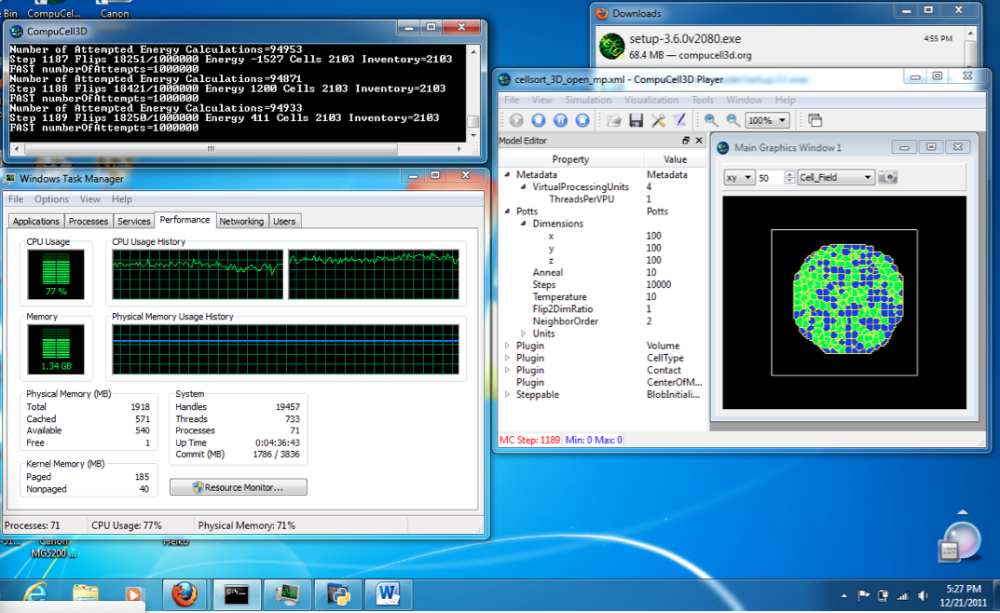

- I used the "current" Windows binary (3.6.0v2080, although when you do the "Help->About", it'll say 2078) - I ran the canned Demo/cellsort_3D_open_mp.xml - with given params, as shown in the Model Editor panel - my machine (Windows 7) has just 2 cpus as evidenced from the Task Manager, and both are basically maxed out during the run - the # of VPUs (4) is more than I have on my machine (if that's relevant) - It's still running - now past 5600 MCS - I was saving every image in the Prefs and saved over 5000; but was not saving lattice (geometry) files